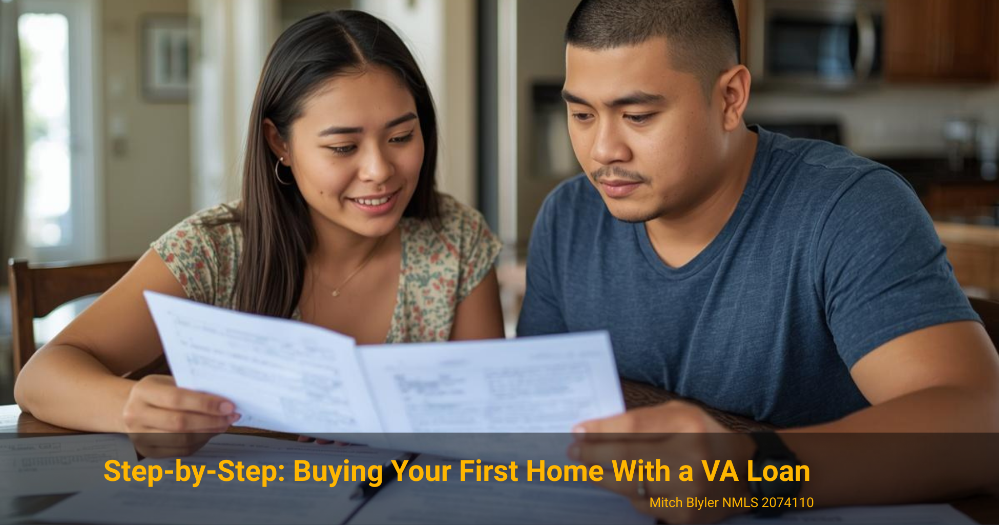

VA Loan Guide
Step-by-Step: Buying Your First Home With a VA Loan
A beginner-friendly VA loan guide for military families and first-time buyers near Kings Bay and Camden County
VA Loan Guide
A beginner-friendly VA loan guide for military families and first-time buyers near Kings Bay and Camden County
If you're considering buying your first home using a VA loan, understanding the process early can make everything smoother.

The VA loan is one of the most powerful home financing tools available to military service members, veterans, and eligible spouses. Yet many first-time buyers feel overwhelmed because they aren't sure how the process works or what requirements they need to meet.
Questions about credit scores, funding fees, eligibility, and the timeline are some of the most common topics I hear from buyers around Camden County and Kings Bay. The good news is that the VA loan process is usually simpler than people expect. Once you understand the steps, it becomes much easier to move forward with confidence.
The VA loan program was created to help military members and veterans become homeowners. Instead of requiring large down payments like conventional loans, the VA backs a portion of the loan for lenders. This allows qualified buyers to purchase a home with more flexible requirements.
Before starting the home search, it's helpful to understand the main eligibility factors lenders look at when reviewing a VA loan application.
If you're unsure about your eligibility or entitlement, reviewing a full guide like the Free VA Loan Guide can help clarify the basics before starting the process.
One of the most common questions from first-time VA buyers involves the funding fee. This fee helps keep the VA loan program running and reduces the cost to taxpayers while allowing the program to offer zero-down financing.
The funding fee is typically calculated as a percentage of the loan amount and varies depending on factors like your down payment and whether you've used your VA loan benefit before.
Many buyers are relieved to learn that the funding fee does not usually need to be paid upfront. In most cases, it can be rolled into the loan amount and financed over time. Some veterans with qualifying service-connected disabilities may also be exempt from paying the fee entirely.
The exact percentage can change periodically, so it's always best to review current guidelines when planning a purchase.
Understanding the typical VA loan timeline helps first-time buyers feel more confident about moving forward. While every transaction is unique, most VA home purchases follow a similar path.
Step one usually starts with pre-qualification. This allows a lender to review your income, credit, and eligibility so you know how much home you can comfortably afford. Once pre-qualified, you can begin working with a real estate agent to search for homes. (This process usually takes a day or less. Just give me a call to get started.)
💡 Life Pro Tip:
The time between pre-qualification and making offers is crucial! Many lenders would take a pause here until a contract shows up. My team and I use this time to gather all the necessary documents needed to prepare your file for the first round of underwriting. This way, when your offer is accepted we can move with purpose to close quickly.
After finding the right property, you'll submit an offer. Once the offer is accepted, the lender begins processing the loan. This includes ordering the VA appraisal, title work, and initial underwriting.
The appraisal is an important part of the VA process because it protects both the buyer and the lender. The appraiser confirms the home's value and checks that it meets basic property requirements.
After the loan is approved through underwriting, the final step is closing. At closing, the documents are signed, ownership transfers to you, and you receive the keys to your new home.
For many buyers in Camden County and around Naval Submarine Base Kings Bay, the entire process can take roughly 30 days once a purchase contract is in place. Starting early with pre-qualification helps prevent delays later in the transaction.
The VA does not set a strict minimum credit score, but most lenders look for scores around 620 or higher. Buyers with stronger credit may qualify for better interest rates and more flexible loan terms.
One of the biggest benefits of a VA loan is that qualified buyers can purchase a home with no down payment. This allows many military families to buy sooner without waiting years to save a large down payment.
Most VA purchase loans close within about 30 to 45 days after a contract is accepted. The timeline can vary depending on documentation, appraisal scheduling, and underwriting requirements.
Yes. In fact, many VA loan users are first-time homebuyers. The program is specifically designed to make homeownership more accessible for military members and veterans.
Not always. Veterans who receive VA disability compensation and certain surviving spouses may qualify for an exemption from the funding fee.
Ask me how you can close in 21 days!
Ready to move fast? Call or text (912) 270-5172 and let's get started.
If you're thinking about buying your first home near Kings Bay or Camden County, starting with a simple pre-qualification can help you understand your options.
Download the Free VA Loan Guide →
Loan programs, eligibility requirements, interest rates, and closing costs vary based on individual circumstances, credit profile, property type, and market conditions. Every mortgage scenario should be reviewed on a case-by-case basis to determine the most appropriate structure.